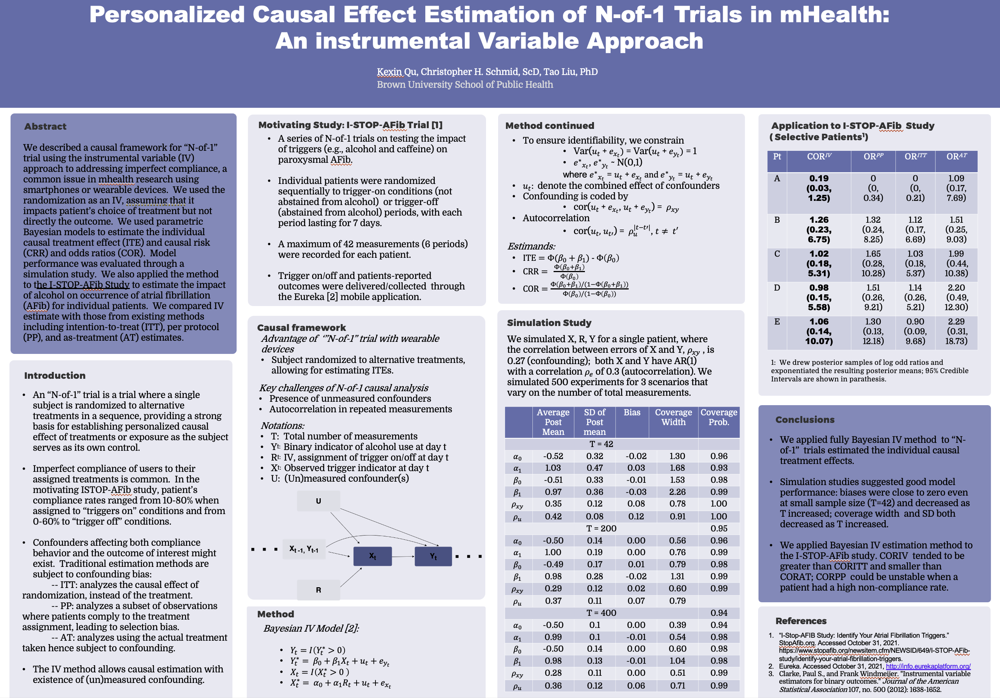
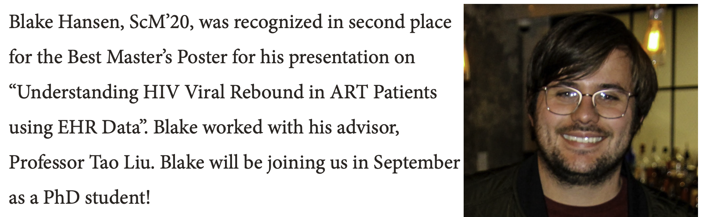

Kexin Qu accepted for poster presentation at the 3rd Annual Health Data Science Symposium.
Congratulations! The symposium focuses on "Smartphones, Wearables, and Health"
and will take place at Harvard in Boston on Nov 5th, 2021. This is a joint work by Kexin Qu,
Chris Schmid, Tao Liu, and the I-STOP trial investigators.

Blake Won Public Health Research Poster Award of 2020
Congratulations to Blake for the Best Master’s Poster entitled “Understanding HIV Viral Rebound in ART Patients using EHR Data”.
(https://www.brown.edu/academics/public-health/biostats/news/2020/05/congratulations-our-biostatistics-public-health-research-poster-award-recipients)
